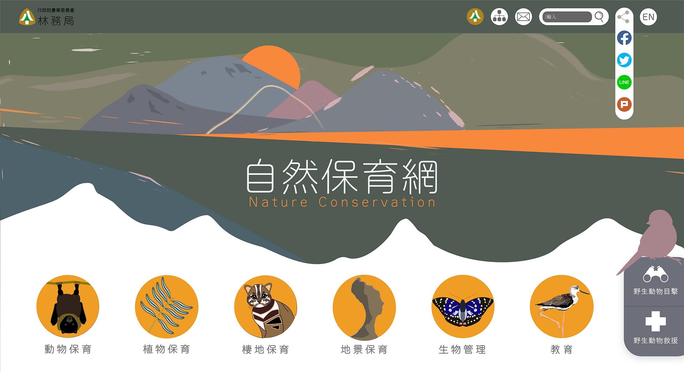
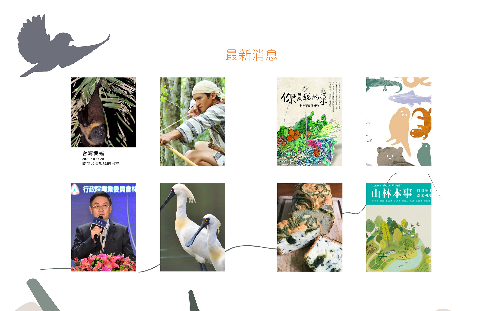
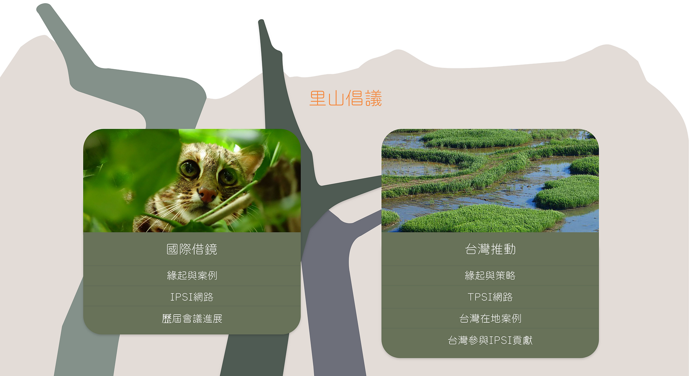
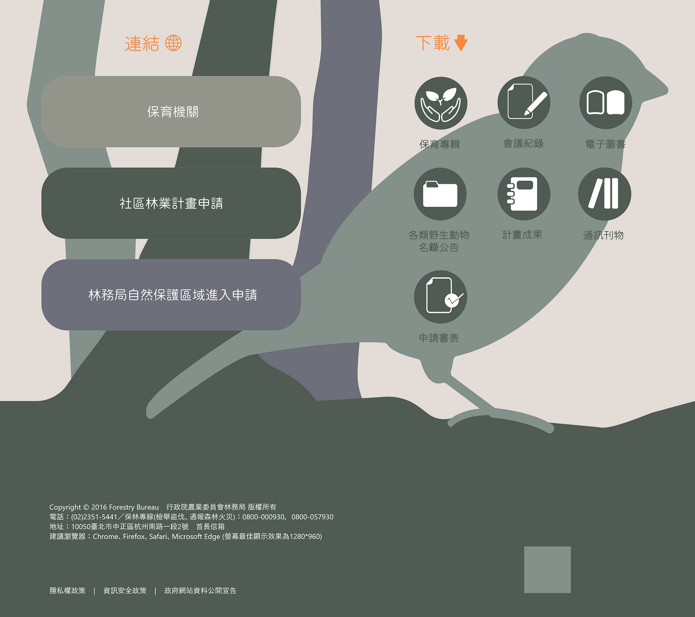
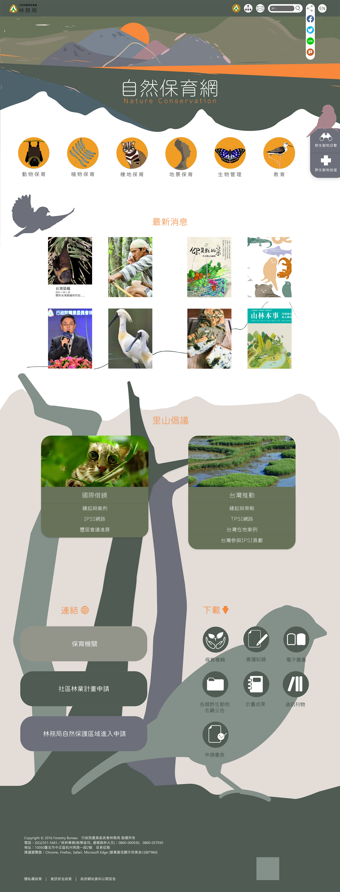

首頁
將保育類項目的目錄作為重心，調整為更快速吸收的文字配插圖，以及利用回饋動畫製造互動與小驚喜。點擊之後會連接到保育類動植物的資料庫，更容易閱讀到野生動植物的資料文獻。 將「相冊」/「救援」/「目擊」功能拉為優先。
新增
新增野生動物目擊&救援的按鈕，未來可以連結救援專線並建立資料庫。

最新消息
視覺上放大版面、加入圖片，增加吸引度與閱讀速度。

里山倡議
從目錄中拉出來，放大版面並放置首頁，目的為更直接地看見政府各項計畫的推動現況。

保留
保留需要在首頁直接操作的下載專區和三項申請連結。

完整版